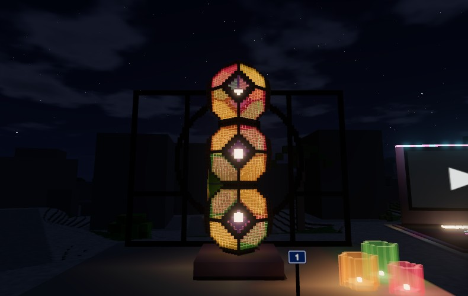
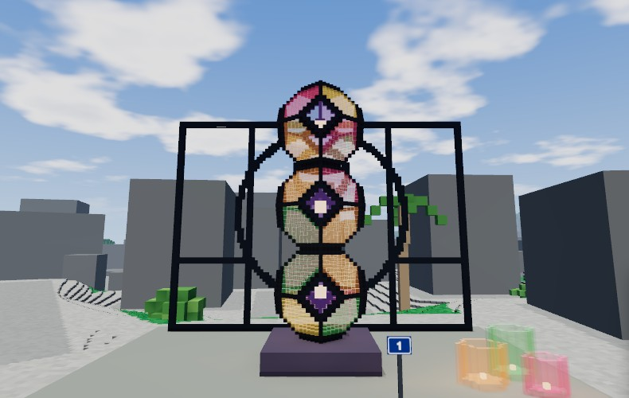

Steel, glass, light
for Jessi Eberlin

A small piece in a world anyone can walk in a browser, made after your work in steel, glass and light. It stands at 1, place Vera Rubin, in OgarVerse.
Walk to it →What's there
- The lamp. Three stained-glass truncated octahedra stacked on their square faces, about seven metres tall on a dark stone base. The panes are amber, rose, gold and green with violet diamonds, the edges are blackened steel, and a warm light burns inside each cell. The glass is real glass to the world, so the light passes through it.
- The screen. A black steel grille behind it, ten metres wide: a frame and bars, a great circle and a small one inside it, after your gates and windows.
- The vessels. Three hexagonal glass cups in amber, green and rose, each lit from within, at the corner toward the street.

To visit
The link drops you on the street in front of it; give it a few seconds to load. Click the view to look around, W A S D to walk, F to fly. It is best after dark: open the menu at the top left and set Time to Night. A desktop browser works best.